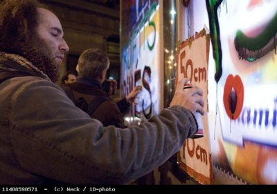

| |
Site dédié à la publication d'informations communiquées par le Collectif des déboulonneurs. En aucun cas ce site n'appelle à des actions illégales. | |
 |
||
|
Accueil du site > Paris > Vendredi 24 février : 4ème action du Collectif des déboulonneurs de (...)
Ce n’était pas un concert de Thomas Fersen qu’étaient venues voir les cinquante personnes regroupées devant l’Olympia ce vendredi soir à 19h, mais un barbouillage de panneaux publicitaires en public. Au signal donné par un commandant déboulonneur, il a suffi au groupe de traverser le boulevard des Capucines pour se trouver, à l’angle de la rue Cambon, au pied de deux exemplaires de ces panneaux, des 8m2 éclairés et déroulants. Une mécanique bien huilée s’est mise en place immédiatement : escabeaux disposés, sono préparée pour les prises de parole, appareils photos montés sur leurs trépieds, comme un tapis déroulé sous les pieds des 7 barbouilleurs et 3 barbouilleuses, qui, agitant leurs bombes aérosol, se sont avancés et ont commencé à peindre leurs slogans sur les panneaux. La première prise de parole a expliqué la motivation de l’action : l’absence d’un débat à la mesure du phénomène urbain que représente l’affichage publicitaire. Ensuite, la revendication principale a été donnée : ramener la taille des panneaux à 50x70 cm, c’est-à-dire celle de l’affichage associatif à Paris. Puis la présence de la publicité à l’école a été dénoncée, comme particulièrement intolérable parmi l’envahissement ambiant. Le problème des boîtes aux lettres envahies de prospectus a aussi été évoqué. 
photo P.Weck / 1D-photo
A 19h15, la police est intervenue pour prendre les pièces d’identité de huit des barbouilleurs. Cela n’a pas interrompu les prises de parole. Un orateur a décrit sa réaction devant un bus entièrement pelliculé, “décoré” par une marque de chaussures de sport : l’indignation, puis la décision (les publicitaires cherchant par leurs provocations à susciter des réactions, même de colère, dans le corps social) de ne pas agir à chaud, et de se réserver pour les actions généralistes comme celle de ce vendredi soir, qui permettent de “donner des coups de pied dans la fourmillière” sans se faire récupérer. Le même orateur a donné ensuite des nouvelles de la bâche de Clichy, qui a été retirée début février grâce à l’action des associations Paysages de France et Résistance à l’agression publicitaire. L’orateur suivant a dénoncé la publicité en tant qu’incitation à consommer. A 19h30, la police, dont on a appris, grâce à une oreille attentive, qu’elle regrettait de n’avoir que deux paires de menottes, a appelé du renfort. Une personne a pris le micro pour dire qu’un yaourt ou un costume pouvaient être achetés sans qu’on ait de publicité, et a mis en cause le truchement de la publicité, pour des costumes, qui était affichée sur les panneaux : nous faire croire qu’en achetant le produit on peut accéder à la perfection physique et au prestige des mannequins représentés, ce qui est bien sûr absurde. Un passant qui s’est présenté comme “simple spectateur” a ensuite remercié les militants qui “mouillent leur chemise” pour la cause antipublicitaire. Puis le budget de la publicité a été rappelé : 1200 milliards annuels dans le monde et 30 milliards en France. Ensuite, quelqu’un d’autre a dénoncé le fait que des hommes et femmes politiques de tous bords ou d’État vendent actuellement leur image pour la réclame d’une radio commerciale : la publicité asservit le politique. Quelques autres aspects de la publicité ont encore subi la critique. Lors d’une interpellation dans le métro, un militant s’était entendu conseiller par un vigile, qui n’y croyait qu’à moitié, de porter des oeillères ; les publicitaires marchandent des vies humaines ; etc. A 19h50, un message a émané de la police : pour faciliter l’interpellation, la foule était priée de se désolidariser des barbouilleurs. En réponse, ces derniers ont fait quelques vocalises et ont entonné la chanson du Barbouilleur. A 20h, le capitaine est arrivé, et une proposition a été faite à la police : soit ils rendaient les pièces d’identité et la manifestation était dispersée en 5 minutes, soit les barbouilleurs se laissaient joyeusement embarquer. Dans les deux cas, ce serait considéré comme une victoire, ce qui est le propre de la non-violence. Un militant a alors pris le micro pour une autre chanson tout à fait de circonstance. A 20h10 un policier a bâillé (pourtant la chanson était vraiment belle), et les cartes d’identité on été rendues, ce qui a permis au groupe de partir se réunir dans un café des environs. A 20h20 le lieu de l’action reprenait son aspect habituel, en exceptant les messages superposés à ceux de la publicité : “espaces publics, profits privés” et “harcèlement psychique, à quand la liberté de réception ?” D’autres photos dans notre galerie |
|
Site utilisant SPIP - Hébergement Ouvaton
|